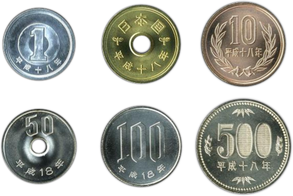

Iene
O conceito do iene era um componente do programa de modernização da economia japonesa empreendido pelo governo Meiji, que postulava a busca de uma moeda uniforme em todo o país, modelada segundo o sistema europeu de moedas decimais. Antes da Restauração Meiji, os antigos han do Japão emitiam seu próprio dinheiro, hansatsu, em uma série de denominações incompatíveis. A Lei da Nova Moeda de 1871 eliminou estas e estabeleceu o iene, que foi definido como 1,5 gramas de ouro, ou 24,26 gramas de prata, como a nova moeda decimal. Os antigos feudos se tornaram prefeituras e as antigas casas da moeda, que inicialmente mantinham o direito de imprimir dinheiro, passaram a ser tornar bancos. O Banco do Japão foi fundado em 1882 e recebeu o monopólio do controle da oferta monetária.
O iene é a moeda oficial do Japão. É a terceira moeda mais negociada no mercado de câmbio depois do dólar dos Estados Unidos e do euro. É também amplamente usado como moeda de reserva, depois do dólar americano, o euro e a libra esterlina.
Após a Segunda Guerra Mundial, o iene perdeu muito de seu valor que possuía antes da guerra. Para
estabilizar a economia japonesa, a taxa de câmbio do iene foi fixada em ¥ 360 por $1 como parte do sistema
de Bretton Woods. Quando esse sistema foi abandonado em 1971, o iene se desvalorizou e foi autorizado a
flutuar. O iene tinha apreciado um pico de 271 ienes por 1 dólar em 1973, depois passou por períodos de
depreciação e valorização devido à crise do petróleo de 1973, chegando a um valor de ¥ 227 por US$ 1 em
1980.
Surgiu em:
